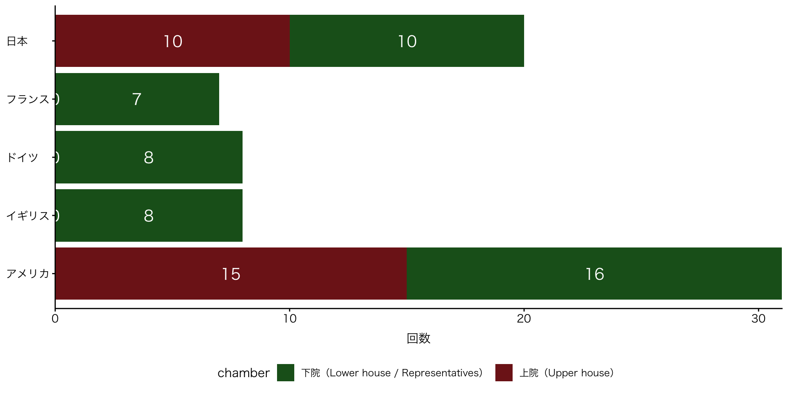
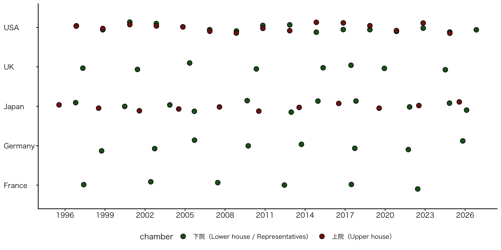
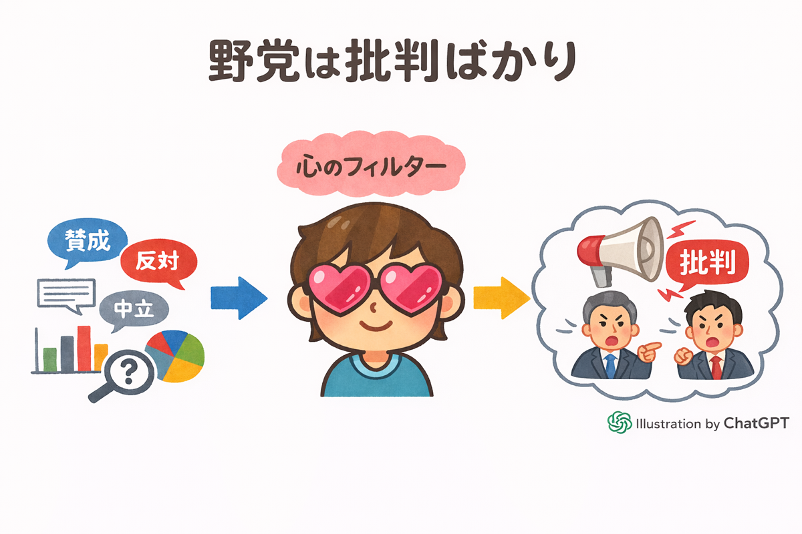
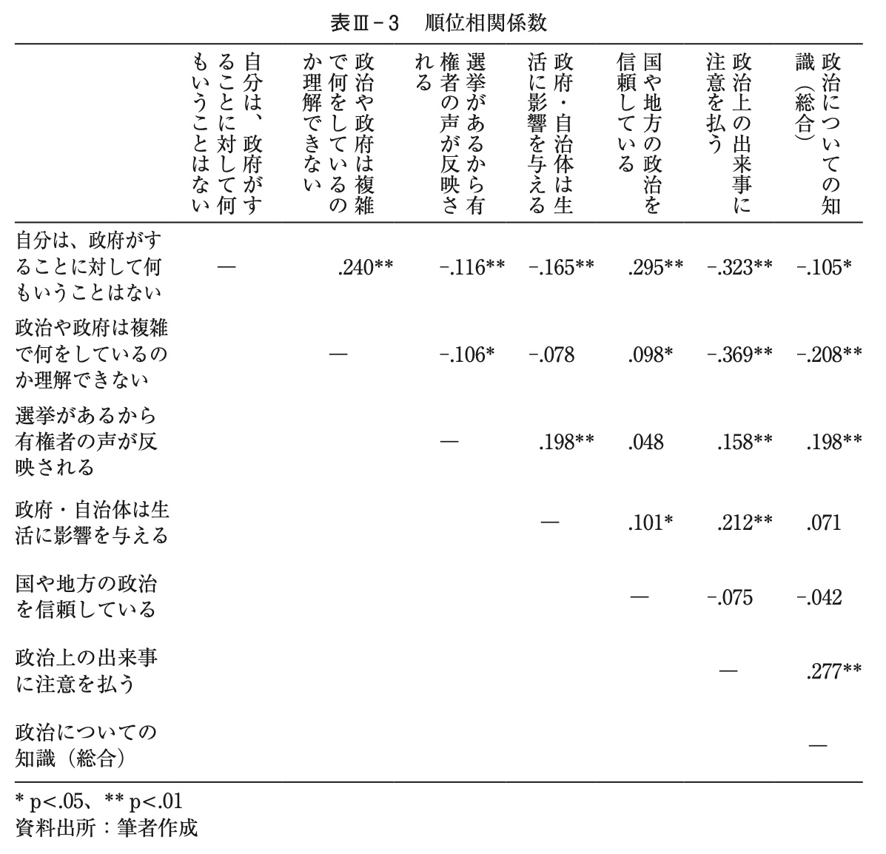
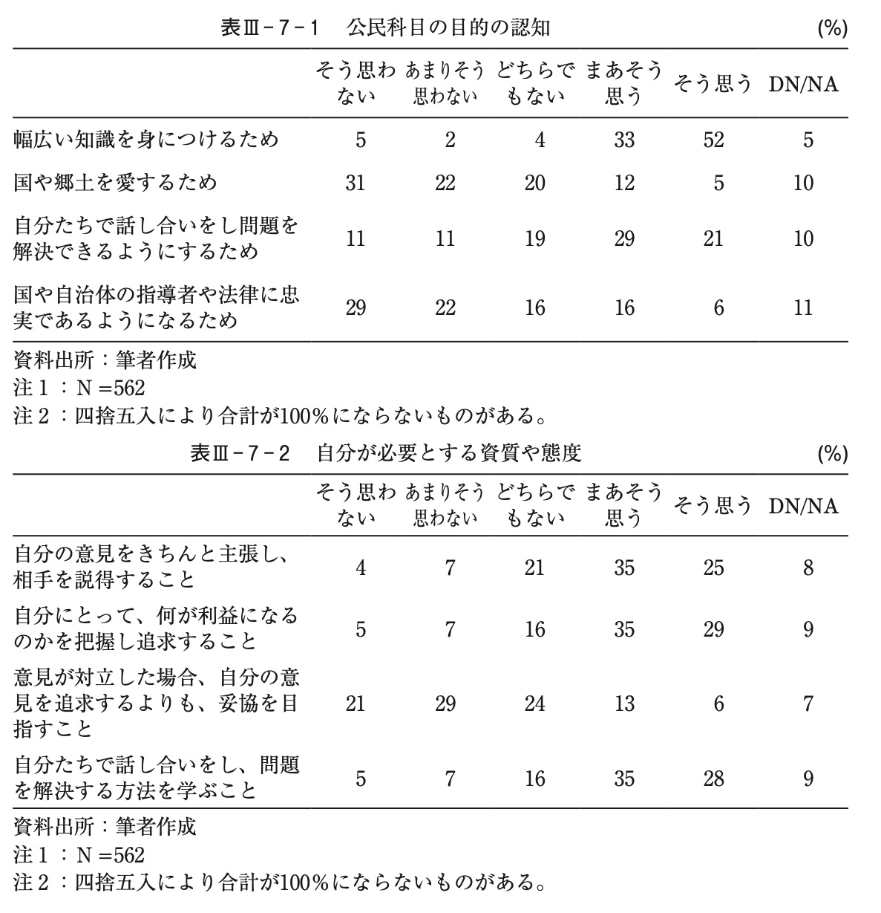

政治学概論Ⅰ《2025》
#5 選挙制度と政治意識（前回の積み残し）
![]()
February 2, 2026
KEYWORDS
- ヒューリスティック；政党ラベル；有効性感覚；選択的接触
Ⅰ. 前回の振り返り（授業の感想）
授業の感想
選挙制度が民意をそのまま反映する仕組みではなく、民意を「屈折」させて政治結果を生み出す装置であると捉え直した点である。
その理由は、これまで選挙を「民意がそのまま反映される場」だと無意識に捉えていたが、授業を通して選挙制度が民意を取捨選択し、強調や歪みを生み出す仕組みであると理解できたからである。とくに、小選挙区制によって少数の得票が大きな議席差に転化する点や、分かりやすい争点だけが強調される構造は、民主主義の前提を問い直すものだった。投票しないことも含めて、有権者の行動が制度と深く結びついていると知り、選挙をより現実的に捉えられるようになった（山田さん）。
授業の感想
私が重要だと感じたのは、イシュー・セイリアンスの部分である。
この部分を選んだ理由は、これまで選挙の争点のなりやすさについて深く意識したことはなく、特にイシュー・ロー・セイリアンスの政策は重要であるにもかかわらず、政治家が選挙で大々的に掲げている印象も薄く、自分自身も投票先を検討する際にあまり注目してこなかったと気づいたからである。講義を通じて、選挙制度の下では分かりやすく顕在性の高い争点が強調され、専門的で目立ちにくい問題について、有権者が十分に理解していないまま意思決定が行われるかもしれないという注意点を知ることができたので良かった（内坂さん）。
授業の感想
教科書では、争点投票が当然の投票行動のように説明されているが、もっとも負担が大きいものであるという部分が重要であると思った。
確かにこれまでの授業内で、選挙において各政党の示す公約や目指す政策を詳しく調べてから比較して結果自身が一番良いと思った政党に投票しましょうという内容で選挙に関して教育をされてきたので、これは投票に関する一見理想的な形を提示されてきただけであり、その投票者の負担の大きさについて特に考慮されてはいなかったのだと感じたから。戦略投票のように、自分の支持する党とはことなる、実際に当選しそうな党に投票することで自分の入れた票がより当選を確実にするという考え方も一つの投票の方法であるのだと適切に伝える必要があると感じた（河田さん）。
授業の感想
投票の判断基準において、有権者は政策・イシューを重視する争点投票に基づいた投票行動を行っている人は少ないということ。
衆議院選挙が近づくなかで、最近は投票率の低下が問題であるとして取り上げられることも多く今回の内容は興味深いものだった。政治学では国民は投票にいくべきであるといった規範よりも、実際にどう行動しているかという実証の解明を重要視していて、その中で教科書では争点投票が当たり前かのように重要であると説明されていることが多いが、争点投票は投票コストにおいて最も負担が大きい投票行動であり、この理想を押し付けることはかえって若者の投票行動を委縮させてしまうと説明されていたから。実際に自分も前回の選挙において投票を行ったが立候補者の政権公約を完全に把握していたとは言えないままの投票だったので、本当にその通りだなと感じた（塩田さん）。
授業の感想
高市首相がコミュニケーションを苦手としていること
高市首相が韓国の首相とドラムで交流をしたり、ニュースで他国の大統領と親しげに話している様子を見ていたので、高市首相は誰とでもコミュニケーションを取れる人であると思っていた。実際は人を誘えなかったり、コミュニケーションを苦手としていると知って驚いた。政治の重荷を1人で負うことはとても負担がかかるし、1人で決めてしまうと、後々周りがついてこなくなることが考えられる。安定した政治を継続的に行っていく為には、コミュニケーションをとることが必要だと思う（泉水さん）。
- Cf. 東スポWEB「陽キャな高市早苗首相は〝コミュ力お化け〟 距離感に疑問の声あがるも海外では全然ＯＫ」
授業の感想
蓮舫さんが参議院選挙では一位当選できたのに、東京都知事選では負けてしまうこと
蓮舫さんが参議院選挙の東京のある選挙区で170万票獲得し一位で当選しているのにかかわらず、都知事選になると同じぐらいの票を取ったとしても当選することはできない点がとても興味深いと感じた。選挙戦に負けたとはいえ、100万人を超える少ないとはいいがたい人かからの支持を得たにも関わらず、選挙区規模が大きくなると当選することができず、100万人の民意が消えたといっても過言ではなく、より多くの人の政治的意見を反映させようと思ったら、都知事選などの大きな選挙区制を変えていく必要があるのかなと感じた（長谷川さん）。
Ⅱ. 選挙制度
（補足）小選挙区比例代表並立制
- 小選挙区と比例代表制をつなぐ比例重複立候補（復活）制
- 小選挙区の一般的特徴
- 小政党の勝利困難→小選挙区に立候補せず
- 比例重複立候補制
- 比例票の掘り起こし→小政党も小選挙区に立候補
- 勝利できなくとも、知名度を上げることができる
- 選挙カー；ポスター；政権放送
- Cf. 単純接触効果
- 勝利できなくとも、知名度を上げることができる
- 惜敗率が低くても、比例復活可能
- 比例票の掘り起こし→小政党も小選挙区に立候補
- 小選挙区の一般的特徴
（補足）小選挙区比例代表並立制
衆院選2024 石川1区（金沢市）の例
- 衆院選2024 石川1区（金沢市）
- 自由民主党候補 64,997票（36.3%）：小選挙区当選
- 立憲民主党候補 51,506票（28.7%）：小選挙区落選；比例落選
- 惜敗率：79.2%
- 国民民主党候補 24,324票（13.6%）：小選挙区落選；比例当選
- 惜敗率：37.4%
ポイント | ドント方式
- 北陸信越ブロックの国民民主党の立候補者数が少なかったため
- 北陸信越ブロック得票数（得票率）
- 立憲民主党：818,773票（25.11%）
- 国民民主党：341,114票（10.46%）
（補足）小選挙区比例代表並立制
衆院選2024 石川1区（金沢市）の例
- 衆院選2026 石川1区（金沢市）
- 立憲民主党候補
- 中道改革連合から公認を得られず、立候補辞退
- （勧められた石川2区から立候補する道を選ばす）
- 立憲民主党候補
（補足）小選挙区比例代表並立制
川人貞史（選挙研究）
まずは、国民に納得感がない個別課題から対応することが求められる。小選挙区で落選した候補が比例選で復活できる現行制度に、違和感がある有権者は多いだろう。すでに提案されている惜敗率に一定以上のラインの設置や、復活当選の議員数の制限など基準を厳しくすることも検討すべきだ（「視座 26衆院選 | 定数削減 国民の視点で… 読売新聞、2026年01月24日）
選挙制度：投票選択
衆議院選挙投票率

- 出所：総務省「衆議院議員通常選挙における年代別投票率（抽出）の推移」をもとに筆者作成
Ⅲ. 日本の選挙制度と議会
日本の選挙制度と議会：参議院
選挙区選挙（朝日新聞「参院選 開票速報」）
- 地方：一人区
- すべての都道府県において最低限の議席が保障されている（人口の少ない地方でも人口に比べて議席数が相対的に多い。2議席。改選議席数は1議席）
- 当選には高い得票率が必要＝広い支持を集める戦略を要す
- 都市：複数人区
- 相対的に低い得票率でも当選可能＝狭い支持を集める戦略を要す
- 与党も野党も「分け合う」形になりやすい
- ➡︎ 同じ選挙制度にもかかわらず、異なる民意が集約される
- ➡︎ 一人区（地方）での勝敗が選挙全体の勝敗を決する
日本の選挙制度と議会：参議院
比例代表制：全国区
日本の選挙制度と議会：日本の選挙制度の特徴
日本の選挙制度の特徴
1. 頻繁な国政選挙
- 衆議院議員の任期：4年（解散あり）
- 参議院議員の任期：6年（3年ごとに半数改選）
- ➡︎ 平均、2〜3年ごとに国政選挙がある
- ➡︎ 他の国に比べて多い（安定的な政権が生まれにくい要因の一つ）
- Cf. 上院議員は有権者の直接選挙によらない制度を採用する国も少なくない
国政選挙回数（有権者の直接投票）1995–2025
- アメリカは過去30年で31回と多いが、上下両院は同時選挙であるため16回
国政選挙回数と間隔（有権者の直接投票）1995–2025
- 日本は回数の多さだけでなく、間隔が短い点でも特異（政権不安定化の要因）
日本の選挙制度と議会：日本の選挙制度の特徴
2. 衆議院と参議院の整合性
- 選挙制度改革を行なった衆議院と、放置されている参議院
- それぞれの院で、どのような民意を調達するのか、それを議会でどう活かすのか（衆議院と参議院の役割分担）の議論不在
- 衆議院：都市の有権者が好む改革
- 参議院：衆議院の改革に抵抗
- 典型的事例：2010年の参議院選挙
- TPP問題に関する、衆議院の民意と、参議院の民意の差
- 一つの政党内に、2つの民意の受け皿ができる（「参議院のドン」）
- 統合が困難に（砂原 (2015, pp. 129–135)）
- 典型的事例：2010年の参議院選挙
Ⅳ. 政治意識
政治意識：マスメディア
⑴ 選挙サイト
- NHK「選挙WEB」
- 朝日新聞「衆議院」
- NHK「 衆議院選挙2026特設サイト」
⑵ 世論調査
政治意識：マスメディア
産経新聞の不正操作
政治意識（1/3）
- 政治意識
- 政治的なことがらに対する心理的な態度、意見、選好
- 政権支持；政党支持；政策支持
- ただし、多くの人は、大きな政治争点がなければ、明確な意識をもっていない
- Cf. 新聞社の世論調査
- 政治的なことがらに対する心理的な態度、意見、選好
政治意識（2/3）
- ヒューリスティック処理
- （政治に限らず）人は意思決定に際して考慮すべき情報を少なくしようとする傾向にある（認知的倹約家）；認知的不協和を回避しようとする（自らの認知と矛盾する情報を回避する）
- Cf. 投票コスト；政党ラベル；「悪夢の民主党政権」
- 新しい事態やこれまでの判断に確信をもてない場合や、余裕があるときに、システマティック処理を行う（別の意思決定を探索しようとする）
- （政治に限らず）人は意思決定に際して考慮すべき情報を少なくしようとする傾向にある（認知的倹約家）；認知的不協和を回避しようとする（自らの認知と矛盾する情報を回避する）
- 「われわれはたいていの場合、見てから定義しないで、定義してから見る」（リップマン『世論』）
政治意識（2/3）
ヒューリスティック処理と認知の歪み
政治意識（3/3）
- 政党帰属意識
- 特殊アメリカ的；変化しにくい；世代間継承
- Cf. 日本においては「帰属」ではなく「支持」を尋ねる
- 政治的有効性感覚
- 自分の一票が政治を動かすという感覚
- 内的有効性感覚：自分たちが政治に働きかければ、それだけの効果はある
- 外的有効性感覚：政治家や政党、国会などが自分たちの気持ちに応えてくれる
- 有効性感覚の低さ ➡ 政治的無疎外感へ
- 政治的疎外感
- 政治はエリートのもの；素人の自分が口を出してもムダ
- ➡︎ 投票率の低下を招くだけでなく、民主主義そのものを弱体化
- 自分の一票が政治を動かすという感覚
政治意識：日本の若い世代の政治意識
政党ラベルについての認識の変化
遠藤 (2024)
- シルバーデモクラシー（高齢者と若年層の意見対立）は確認できない
- 政党ラベル（政党のイメージ）
遠藤(2024)
政治意識：日本の若い世代の政治意識 > 政党ラベル（政党のイメージ）
1. 冷戦期の対立軸
- 保守：自由民主党；革新：日本社会党
- ➡ 一貫性のある政策パッケージを提供
- ➡ 政治ラベル（政党のイメージを端的に示す）として機能
政治意識：日本の若い世代の政治意識 > 政党ラベル（政党のイメージ）
- 冷戦崩壊以降、対立軸が曖昧に
- 何を保守するのか／何を革新するのか不明瞭に
- 政党ラベル（党名の意味）も曖昧に
- ➡ 世代間で異なる政党ラベルのイメージ
- 保守・革新の理解：「現状を守るのか変えるのか」という観点で評価
- 例）保守＝日本共産党；革新＝日本維新の会
- 調査時点（2012年）において、40歳以下の有権者に広く見られる現象（冷戦崩壊によってイデオロギー理解に断絶が生じた可能性あり）
- ➡︎ 有権者は政党ラベルに頼ることができず、投票コストが増大（苅谷）
政治意識：日本の若い世代の政治意識 > 政党ラベル（政党のイメージ）
55年体制下の自民党と社会党との政策の違いはかなり明確であったが、それに比べると2000年代の自民党と民主党の政策の違いを見分けるのはずっと難しくなった。このことは、55年体制下で政治的社会化を経験する若者よりも、2000年代に政治的社会化を経験する若者の方が、政治的対立を理解するときに難易度の高い課題に直面したことを意味する（遠藤 (2024)）
政治意識：日本の若い世代の政治意識
高校生の政治意識（有効性感覚）
石橋 (2010)
- 目的：政治参加の動機と関わる政治的有効性感覚に影響を及ぼす諸要因の解明
- 調査：大阪府吹田市の高校生を対象に実施した政治的態度についての調査
政治意識：日本の若い世代の政治意識 > 高校生の政治意識
- 結果：
- 政治的有効性感覚の形成
- 性別：家族；マスメディア
- 個々人がすでに内面化している政治的態度ないしは先有傾向
- 有効性感覚
- 外的有効性感覚：比較的強い
- 内的有効性感覚：弱い
- 「政治に多くの事柄を委任し、政治参加を回避しようとする傾向がある」（石橋 (2010, p. 79)）
- 政治的有効性感覚の形成
政治意識：日本の若い世代の政治意識 > 高校生の政治意識
〔以下に示す〕調査結果によれば、応答性に対する期待を示す「選挙があるからこそ有権者の声が反映されるようになる」については、59％の回答者がこれを肯定している。なお27％の回答者が「わからない」「無回答」を選択しているが、もし学校で習った記述内容を無自覚的に受け入れていればこの意見を肯定したはずである。つまり、教科書の内容と現実との間に矛盾を感じている者が一定数いるということである。「政治や政府は、あまりに複雑なので、自分には何をやっているのか良く理解できない」は、政治に対する理解力についての自己評価を尋ねたものであり、この意見を肯定していれば内的有効性感覚が弱いと判断される。回答者の65％がこれを肯定していることから内的有効性感覚は全体として弱いとみてよいだろう。回答者たちは政治に不信を感じながらも外的有効性感覚が比較的強く、内的有効性感覚が弱いことから、政治に多くの事柄を委任し、政治参加を回避しようとする傾向があるといえよう（石橋 (2010, pp. 79–80)）。
政治意識：日本の若い世代の政治意識 > 高校生の政治意識

石橋(2010) 78頁 政治的態度
政治意識：日本の若い世代の政治意識 > 高校生の政治意識
石橋(2010) 82頁 順位相関係数
政治意識：日本の若い世代の政治意識 > 高校生の政治意識
石橋(2010) 89頁 公民科目の目的の認知
政治意識：日本の若い世代の政治意識
政治意識の世代比較
善教 (2025)
- 「民度」を鍵概念に、日本の現在の政治意識を分析
- インターネット調査
- 第6章「若年層は低いのか」
- 若年層以外：若者を過小評価
- 若年層：若者と年配の有権者の相違を過大評価
政治意識：日本の若い世代の政治意識 > 政治意識の世代比較
- 政治知識の有無
- 年齢によって相違があるものもあれば、ないものもある
- 若年層が知っていることを、若年層以外が知らないこともある
- （「公民」「公共」で学習するような内容）
- 「見た目」で選ぶ傾向
- 実験：若年層コンジョイント実験
- 実験結果：政治について知らない若年有権者も「政治情報が示されたときは、見た目以上に政策に基づき投票」(善教 (2025, p. 194))
政治意識：日本の若い世代の政治意識 > 政治意識の世代比較
若年層とそれ以外の人びとの相違は実態としては小さいにもかかわらず、必要以上に若者の能力を低く見積もり、両者の隔たりを強調することはさまざまな問題を生じさせる。若者のなかの自尊心や投票参加への期待が失われるだけでなく、選挙に価値を見出せず、それを無駄と考える傾向も強まる。そのような若年有権者は、投票参加の権思うようになるだろう。これはただの杞憂ではなく、現実の問題となっていいても、本章では解説する（善教 (2025, pp. 174–5)）。
政治意識：日本の若い世代の政治意識 > 選択的接触論
選択的接触論
稲増 and 三浦 (2016)
- 選択的接触論の検証
- 選択的接触論（仮説）：
- 人は、自らの先有態度に沿う情報に接触し、沿わない情報を回避する傾向にある
- マスメディアへの接触は有権者の態度を補強する効果はもつが、態度を変えるような効果はもたない
- 選択的接触の分類
- 党派性に基づく選択的接触
- メディア内容に対する選好に基づく選択的接触
- ネットメディアの台頭；ネットメディアの特性
政治意識：日本の若い世代の政治意識 > 選択的接触論
- 社会心理学者。主著 稲増 (2022)。 マスメディアがもつ影響力（フレーミング効果：争点をどのような枠組み（フレーム）に基づいて報道するかによって、争点に対する有権者の態度が変わる）について論じられている。2024年総選挙に際して論じた以下の考察も重要。
米国とは違い、日本の有権者に「大きな政府」か「小さな政府」かと聞いても対立軸は見えてこないのですが、「変化を求めるか否か」「格差を許容するか否か」という問いを立てると、見えなかった対立軸が見えてきます。変化や格差をめぐり現状を許容する「システム正当化」の傾向は、高齢の男性ほど高いのですが、（高齢男性ほど社会的に有利な立場ではない）若い女性や低所得者にも現状を正当化し、投票する傾向があります」（朝日新聞「有権者の「三つの軸」政策に変換できない政党 心理学でみる投票行動」2024年10月20日）。
政治意識：日本の若い世代の政治意識 > 選択的接触論
- 目的：選好に基づく政治知識・国際知識の差の拡大・縮小に関わるネットメディアの特定
- 独立変数：インターネット上における各サービスの利用
- ポータルサイト；新聞社サイト；ニュースアプリ；2ちゃんねるまとめサイト；Twitter；Facebookの認知や利用頻度、利用形態
- 従属変数：政治・国際ニュース知識を測定するクイズ（正答数）
- 結果：
- 選好に基づく政治知識・国際知識の差の縮小に貢献すると考えられるメディア
- ポータルサイト；新聞社サイト；2ちゃんねるまとめサイト
- 選好に基づく政治知識・国際知識の差を拡大すると考えられるメディア
- ニュースアプリ；Twitter（「知識を獲得できるのは元々ニュースを求める選好を持った人のみ」（稲増 and 三浦 (2016, p. 180)））
- 選好に基づく政治知識・国際知識の差の縮小に貢献すると考えられるメディア